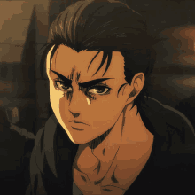

Sinopsis
La historia se desarrolla en un mundo ficticio en donde la humanidad está al borde de la extinción a causa de unas criaturas humanoides llamadas «titanes», por lo que los sobrevivientes se resguardan en tres enormes murallas que impiden el acceso a los monstruos. Es así que Eren Jaeger, protagonista principal, decide unirse al «Ejército de las murallas» junto con sus amigos de la infancia, con el fin de vengar la muerte de su madre, defender los muros y liberar a la humanidad de los titanes.
La obra fue adaptada a una serie de anime dirigida por Tetsurō Araki y producida por Wit Studio, en colaboración con Production I.G. Su emisión comenzó en Japón el 6 de abril de 2013 por la cadena televisiva Mainichi Broadcasting System (MBS),n. 3 y finalizó el 28 de septiembre del mismo año con un total de veinticinco episodios. Una segunda temporada de doce capítulos se transmitió entre abril y junio de 2017. La tercera temporada se emitió en dos partes, la primera entre junio y octubre de 2018, y la segunda entre mayo y junio de 2019. La cuarta y última temporada se anunció en 2020, dividida en dos partes: la primera comenzó el 7 de diciembre de 2020 y que terminó el 28 de marzo de 2021, y la segunda, para principios de 2022.
Biografia
Isayama estudió su secundaria en el Ōita Prefectural Hitarinkou High School y posteriormente asistió al programa de diseño de manga de la Kyushu Designer Gakuin.
En 2006 publicó en Kodansha un primer capítulo de lo que años después sería Ataque a los titanes (Shingeki no Kyojin). Recibió malas críticas por su dibujo pero Isayama siguió intentando publicar su manga. Con ese objetivo a los 20 años se mudó a Tokio donde empezó a trabajar en un cibercafé.
En 2009, Isayama recibió un premio en el Magazine Grand Prix de la editorial Kōdansha por Ataque a los titanes. Inicialmente, el autor tenía planeado publicar su obra en la revista de publicación semanal Shōnen Jump de la editorial Shūeisha, pero se le pidió que modificara el estilo y la historia para que se adecuara a la revista. Así, decidió probar con otra revista, esta vez la Shōnen Magazine de Kōdansha.3 A pesar de que no consiguió ser publicada en ella, Ataque a los titanes comenzó a publicarse en septiembre de 2009 por Bessatsu Shōnen Magazine, otra revista de Kōdansha.4 En 2011, el manga ganó el premio Kōdansha Manga Shō de 2011 en la categoría mejor shōnen.
Trama
Shingei No Kyojin o “Ataque a los Titanes” cuenta una trama bastante enriquecida al mejor estilo oriental y a lo largo de la serie se han ido revelando tantos personajes como acontecimientos se dan en la misma.
Al fin de cuentas la serie tiene un espectacular número de más de 200 personajes totalmente definidos y funcionales, esto resulta toda una épica para un escritor, solo equiparable a la misión de seleccionar a los personajes principales.
Por esto, te mostraremos a continuación los personajes totalmente necesarios para entender el contexto de la historia, sabemos que muchos otros tienen roles protagónicos en la trama.
Por ello nos limitamos a aquellos que son muy funcionales y con muchas apariciones a lo largo de la historia, o a aquellos que por la intervención que hicieron cambiaron el flujo de los acontecimientos de manera dramática.
Personajes
Eren Jaeger/Jäger
Protagonista de toda la historia, creció en la ciudad de las tres murallas concéntricas, supuesto último asentamiento humano en el mundo. Tras abrir una brecha en la muralla externa los titanes ingresaron a la ciudad matando cientos de humanos entre ellos la madre de Jaeger que termina siendo devorada por un titán. Eren jura vengarse y se une al ejército para posteriormente descubrir en sí mismo la capacidad de transformarse en un titán. Habilidad que usa para combatir a los titanes invasores.
Mikasa Ackerman
Salvada y adoptada por Eren Jaeger, Mikasa es la penúltima sobreviviente del Clan Ackerman. Al crecer se enrola en las fuerzas armadas y hace parte del grupo de exploración, encargado de investigar y combatir los titanes más allá de las murallas.
Armin Arlert
Mejor amigo de Eren Jaeger a pesar de no ser un gran guerreo se enrola en la fuerza junto Eren. Armin resulta ser un gran estratega y pieza clave en la derrota del titán colosal, titan en el que posteriormente se convierte tras una confusa situación.
Ymir Fritz
Según la leyenda Ymir encontró el origen de toda la materia encarnado en un demonio que al fin de cuentas le concedió el poder de los titanes para pelear por su pueblo. Luego al parecer todo se sale de control cuando Ymir muere y divide su poder en 9 partes que otorga a su pueblo.
Familia Fritz (Reiss)
La familia Fritz se mantuvo en el poder luego de la muerte de Ymir. Esta familia controló los dones de los titanes cambiantes durante un larguísimo periodo de tiempo y uno de sus integrantes fue el creador de la ciudad de las tres murallas concéntricas.
Titanes
Para aclarar un poco más la historia, veremos los diferentes tipos de titanes que se encuentran en Shingeky No Kyojin.
Titanes irracionales
Los titanes irracionales son los más comunes y tienen una forma cuasi humana, estos deambulan por los bosques y valles y atacan a cualquier ser humano que vean, persiguiéndolo hasta comerlo o perderlo.
Titanes Piedra
Este tipo de titán tiene la capacidad de endurecer su cuerpo hasta convertirlo en piedra, al parecer pueden vivir por periodos de tiempo casi infinitos y son bastante escasos como para ser estudiados.
Titanes anormales
Los titanes anormales en apariencia son iguales a los irracionales pero su comportamiento es bastante diferente y al parecer tienen capacidad de raciocinio y no necesariamente persiguen sin sentido todo ser humano que ven, aunque si lo hacen.
Titanes cambiantes
Los titanes cambiantes son los nueve titanes que se desprendieron del poder de la titán original Ymir, el poder de dichos titanes cambia de una persona a otra de una manera bastante particular, siempre y cuando esta persona pertenezca al linaje de Ymir.
Los 9 titanes cambiantes son: Titán fundador, titán colosal, titán de ataque (en este se transforma Eren Jaeger), titan acorazado, titán hembra, titán mandíbula, titán bestia, titán martillo de guerra, titán carguero.
Titan de Rod Reiss
El titan de Rod Reiss al parecer es único y no pertenece a ninguno de los grupos anteriormente mencionados, este titán sin duda es el más grande de toda la saga, tanto que ni siquiera puede levantarse y se desplaza por todos lados arrastrando la totalidad de su cuerpo por la tierra incluido su rostro, lo que genera un espectáculo grotesco al levantarse.